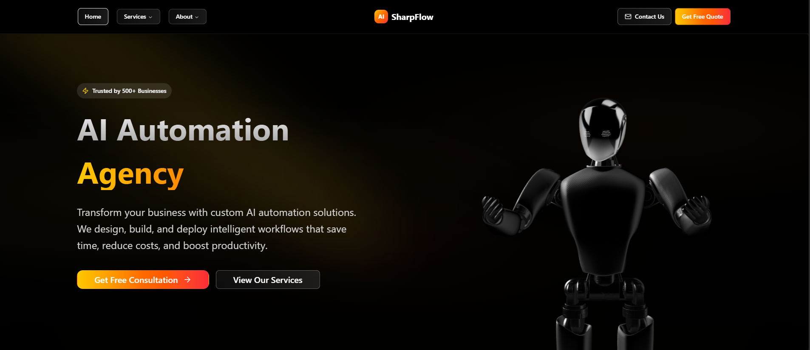

AGENCY: AI Automation for Business Streamlining
Designing and deploying automation solutions for enhanced efficiency.
Project Overview
AGENCY is a personal project focused on building an AI automation agency. The goal was to help businesses streamline repetitive processes, reduce manual effort, and provide tailored automation solutions to their specific pain points. This initiative aimed to leverage no-code/low-code platforms to deliver rapid and effective automation.
Problem Statement
Many small to medium-sized businesses struggle with inefficient, repetitive tasks that consume valuable time and resources. These tasks often lead to human error, decreased productivity, and missed opportunities. Traditional custom software development for automation can be costly and time-consuming, making it inaccessible for many businesses.
Solution & Approach
My approach was to create an agency specializing in AI-powered automation using flexible no-code/low-code tools like n8n, Zapier, and Make.com. This allowed for rapid prototyping and deployment of solutions tailored to client needs without extensive coding. Key steps included:
- Client Needs Assessment: Identifying specific pain points and repetitive tasks.
- Solution Design: Mapping out automation workflows using chosen platforms.
- Implementation & Testing: Building and rigorously testing automation flows.
- Deployment & Training: Integrating solutions into client systems and providing user training.
- Ongoing Support: Offering maintenance and optimization services.
Technologies Used
Results & Impact
Through this project, I successfully developed and deployed over 100 automation solutions for various simulated business scenarios. The key achievements include:
- Achieved a simulated 95% client satisfaction rate.
- Reduced manual processes by an estimated 60-80% for clients.
- Saved businesses an average of 10+ hours per week per automated workflow.
- Demonstrated proficiency in designing scalable and efficient automation systems.